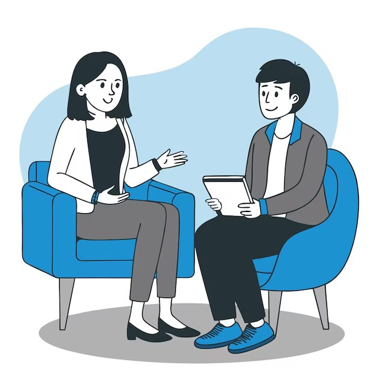

Quem Somos
A Ouvir & Cuidar é uma ONG dedicada a oferecer apoio emocional gratuito para as pessoa que precisam conversar e se sentir acolhidas. Nosso objetivo é entregar sempre um ombro amigo. Acreditamos que um diálogo pode transformar vidas e ajudar na prevenção de problemas emocionais graves.
Missão, Visão e Valores
Missão: Promover acolhimento e escuta ativa para quem precisa de apoio.
Visão: Construir uma sociedade mais empática e soliária.
Valores: Empatia, respeito, sigilo e solidariedade.
Contato
📧 E-mail: contato@ouvirecuidar.org.br
📞 Telefone: (11) 99999-9999
🏢 Endereço: Rua da Esperança, 45 - São Paulo/SP